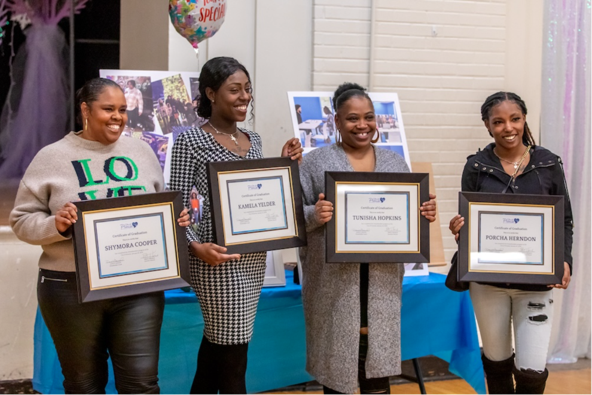

A child's learning starts outside the classroom, in the household and the neighborhood that shape the school day before the bell rings.
In Charlottesville, the literacy gap between Black and White students is 49 percentage points. It's the highest in Virginia.
The kids we work with come to class carrying chronic absenteeism, household instability, and a life that school alone can't fix.
The failure isn't in the teachers, the curriculum, or the funding. It's in the load a child carries into the classroom from outside of it.
CCS spends more per child than the state average. Outcomes haven't followed.
Missing ≥10% of school days, the leading indicator for every downstream gap.
Black vs White reading-SOL pass rates, 3rd–8th grade. Detail above.
Click on an area to learn more.
The family below is a composite, but every support is one we deliver today. Select a family member to see what City of Promise wraps around them.
Reach the kid, or reach the parent. Most organizations can only afford to choose one. The dual-generation model is the bet that you have to do both, together, or the gains don't compound.

Three assumptions. Take any one away and the model collapses.
Services inside the school the child already attends. Not a referral across town.
A parent who's thriving is the single biggest predictor of a child who's thriving.
A coach who knows the family's name, and has been there for two years, can do what a case manager can't.
The three programs on What We Do put this argument into practice.